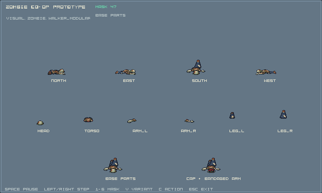
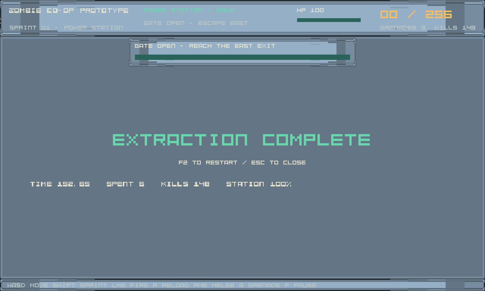
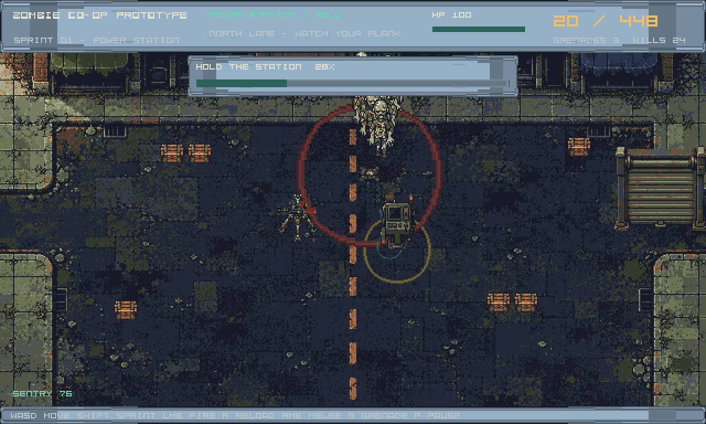
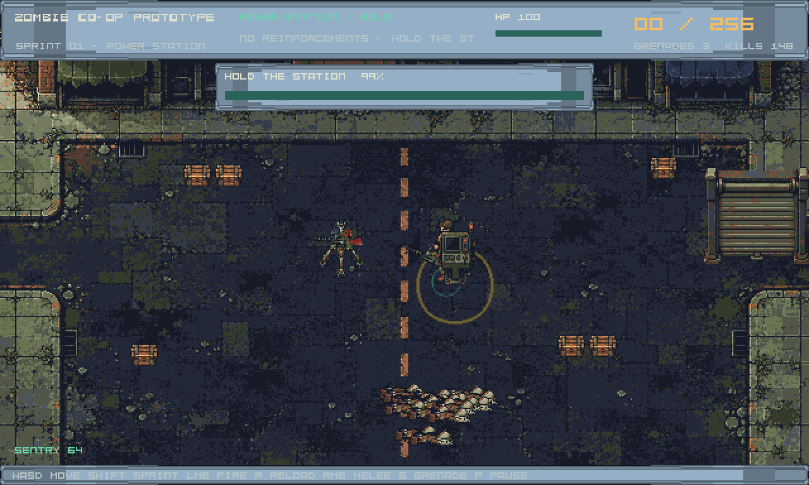
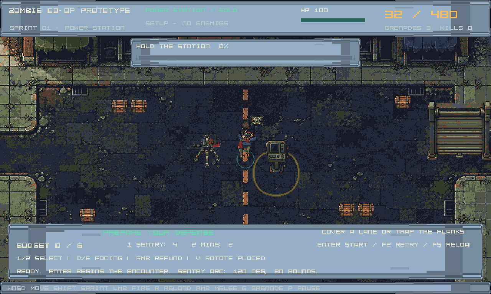

LOCAL BUILD
Zombie Co-op Prototype
Executable only. No launcher or launch arguments have been verified.
48EB33C7B4EC1C62022032F74AD5D1C272929553A91B4CD97B578C1B8531BCDERecorded reports describe their original snapshot. Technical checks do not establish human art, gameplay or performance acceptance.
Existing captures; opening this page does not run the game or create new acceptance evidence.




